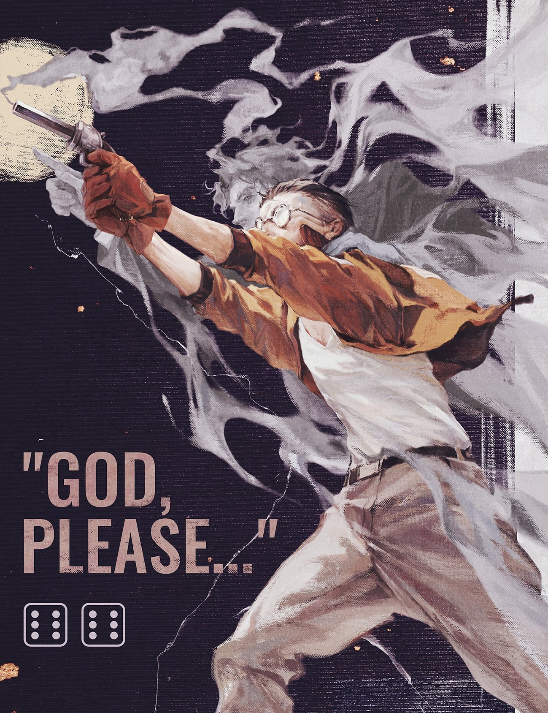
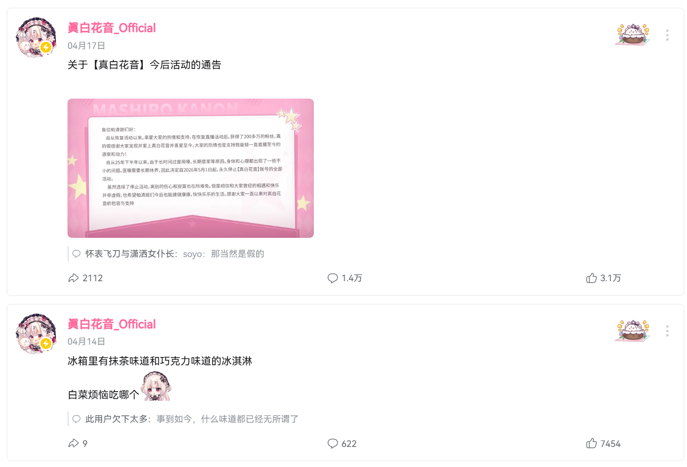

# 金曷城的护佑天使
来源 b 站

所有的神圣最后都不过是狗屎，所有的意识形态最后都现出虚弱无力的原形。奇迹在虚无中闪烁不定，最后你能够依靠只能是 “我相信”。
网友 Paul Looney 为金曷城警督所写的曲子，选取了与雇佣兵决战的时刻，高度近视眼的金，千钧一发时保护哈里的瞬间。金曷城后面站着的是他曾经的搭档 “眼睛”，为保护金而牺牲。“眼睛” 正在为金的双手指引方向。
# 约瑟翰・庞麦郎
来源歌手庞麦郎
如果没那个命做不一样的烟花，
能不能让我用骨头怼着地表，
擦出火花。
# 端然正己
来源《荀子》，被 deepseek v4 官方公众号引用
不诱于誉，不恐于诽，率道而行，端然正己。
# EVA & 后现代
# 什么也没有
来源知乎
《eva》绝非什么都没有，恰恰相反《eva》里什么都有，《eva》基本上把后现代困境都拍完了。而且形成了一套 “eva 范式”。
甚至后世的《电锯人》也没有跳脱出这个范式。
那么问题来了，为什么宫崎骏会这么说，很简单宫崎骏是一个前现代人。
而在前现代人眼里，后现代困境是被忽视的。
“现在生活不比我们那时候强啊？你有啥难受的？”
“我们啥型号的美军轰炸机没见过，你这算个啥？”
“给你找个媳妇就好啦。”
从创作主题上也可以看出宫崎骏这代二战老登在创作主题上与庵野几乎是完全相反的。
这种相反简单概括就是：宫崎骏作品里的 “世界” 是很巨大的，而且是越来越大。他很多作品表现的都是在一个世界产生无可阻挡的巨变下人的冒险，随着冒险的过程主角进一步认识更多这个世界，改变，成长，但在冒险的最后又回归某种本心。很古典的英雄之旅。
而庵野的《eva》里，“世界” 这个概念从一开始就不断的在缩小。从一开始就首先缩小到一座城，再从城缩小到一个组织，再从一个组织缩小到主角身边的人际关系，然后人际关系再崩坏进一步退缩到主角的内心，最后连自己的内心也维持不住走向崩坏和消解……
可以说，二者在创作上是绝无调和的可能，因为就是完全走在相反的方向。
那么在前者看来，后者这种 “越来越往心里去” 的肯定是没帮助也没结果，继续下去只能是 “什么也没有”。
但我不认为这是一种前者对后者的否定，倒更像是长辈对年轻人的关心。
因为宫老在这样评价之后干了两件事：
- 劝庵野休息一段时间，啥都不用干。
- 给他找了个媳妇。
从新剧场版的结果来看个人觉得药到病除了属于是（悲）
eva 的后现代问题的根本就是，后现代问题没有答案，后现代是一个黑洞，你只能被吸进去粉粉碎而不可能从中逃出来。后现代心里问题的治疗办法反而是拉长时间，休息（劳逸结合），找老婆这种甚至可以说是前现代的做法了，事实证明，老爷子看法很准，痞子纠结的那些东西就是靠时间且只能依靠时间才能治愈的。
# 无病呻吟
来源知乎
EVA 是一个后现代作品，甚至可以说是后现代二刺螈作品的开端。
那些生活在社会达尔文时代里面、认为一切问题都是当事者能力不足的现代人，是理解不了 EVA 的；他们只会疑惑 —— 为什么真嗣不能 “比任何人都强然后打爆一切。”
事实上真嗣的确比这部作品里的任何人都强，都更坚韧，但是很多问题不是靠他一个人的坚韧就能解决的。当现代性消灭了所有神仙皇帝，莉莉丝被钉在冰海上的时候，他们向每个新时代的人承诺他们可以给予新时代一切，但是到了新时代，seele 的表现甚至还不如那些神仙皇帝，碇司令是比真嗣还离谱的巨婴，从美里到加持到赤木到碇唯这几个成年人无一例外都是精神病人，他们拥抱了现代性，但是现代性完全没解决问题，古典的道德和信仰缺失之后，他们只剩下放纵自己的欲望，然后让一切变得比原来糟的多。现代性欺骗了所有人，使徒还是会来，大家还是会死，最后逼得实在没办法站出来解决问题的后现代小登看着这帮仙人搞出来的一地鸡毛，表情稍微动摇了一点，立刻 “无病呻吟”“性格软弱”“社会化程度不足” 的大帽子就扣上来了。
实际上他们自己面对这些问题的时候除了互相吵架，用打炮和酒精麻醉自己，以及让事情变得更糟之外，什么都没做到。
但是他们不会指责自己，他们只会指责真嗣为啥不上 eva。
这可以理解，但是要是说让我认同这种做法那是万万不能。
痞子自己可能没意识到这一点，但是他搞出来的这部作品非常典型地体现了黄金时代落幕之后年轻人们的想法，到现在也有现实意义。
因为黄金时代，从来不是这些人创造的。是黄金时代造就了他们，而不是他们造就了黄金时代。到现在，那个时代落幕之后，这些人没有权力去指责 “新一代年轻人因为弱而无法延续黄金时代”。
因为™的那就做不到，因为他们把自己看得太重。
说到底，你们这些老登到底是干什么吃的？
# 反奋斗、不想听鸡汤
来源知乎
通过看本题下的答案，我发现很多老登根本没完整地意识到青年反奋斗的根源和严重性。
老登认为，年轻人反奋斗是因为他们的父母能够提供基本生存条件。
老登又认为，撤去其父母支援，年轻人转而会为生存而奋斗。
由此老登判定，年轻人无病呻吟，问题不大。小登反奋斗是因为享了太多福，让他们吃点苦他们就会奋斗起来。假以时日，还是会变成奋斗的上有老下有小的中年人。
老登根本意识不到青年的意志力已经从弹性形变被拉到了塑性形变，变得不可恢复，不可激发。在已经受力被拉直的弹簧上再添压力，他们可能直接崩溃而不是奋斗。
老登的底层逻辑还是生存至上，活着有利可图，所以想当然地以为小登为了生存下去，还能承受进一步压榨。他们的思维定式，世界越来越美好，生命宝贵，活着就能熬资历上升，结婚生儿育女就等于过上了好日子，儿女长大了越来越有盼头等等，现在都已经失效了。
而小登沉浸在微利时代，无上升空间。并且由于普遍的受教育率已经变成了会思想的芦苇，生命力脆弱，思想细腻，脸皮薄，一路在应试教育中受尽折磨，还有消费主义影响，物质条件低不下来。已经在思考生存值不值得，如果需要进一步受压榨才能生存，他们可能选择去死。
这种矛盾就发生在跳楼自杀的家长和孩子之间，家长觉得孩子生活在蜜罐里，吃穿不愁，过于幸福，所以还能再榨一榨，而孩子其实已经在崩溃边缘，再受打击直接跳。就算还在一个锅里吃饭，两者的生死观已经不一样了。
当然现在小登更多地不会直接跳。还是有缓冲区的，他们选择部分自杀：不婚不育。以不再供养孩子来减轻活着的负重，而老登由于没文化还急于证明自己身体正常，通常必定生有孩子。所以当年老登在下岗后会面临为了养家糊口而从事高危工作的困境，尽管万般无奈还是咬牙撑下来，这就是他们所谓的 “为生存而奋斗”。而小登预判了养孩子会让自己陷入 “为生存而奋斗” 的窘境，干脆不生。
所以，未来会脱离老登的判断，以老登在本题下的表现，没法预判和应对未来。间接可得，上面也没有相关的认知。
............
目前拍电影，宏大叙事肯定不能了，小确幸也不行，因为中国人相对不喜欢唯心主义。建议悬疑推理，社会派推理还是可以的。
贾樟柯，刘震云那种发展中的反思与惆怅也会很好。
就算设置正面人物，也要像谍战片那样，把好人埋进精彩的悬疑故事当中，把英雄设置得亦正亦邪类似于斯内普教授。不能搞高大全。
# 暮然回首
来源哥们
我现在真找不到任何意义，好恶心；我想做个草食男，但我又渴望被喜欢
我真的没救了
我知道就算我真的谈恋爱，也不可能把自己的全部展现给另一半，“展现给另一半”，从现实的男女博弈上说也是极为危险，成年人没有心安之所
一切有什么意思呢？
看的心累了，我已经 25 了，还有那么多可以试错的地方吗？我还很肤浅，除了些破动画和游戏，我还知道什么？哎，或许我确实应该少看让自己焦虑的网络新闻，但意义很难找，哪里都是逢场做戏
回过头来发现自己真的是碇真嗣，哈哈。明明我很讨厌他，可是我理解了他为什么喜欢戴耳机，为什么从地铁首站坐到到末站……
而且很难过的是，我们嘴上会说，我们不想要肤浅的拜金的现实的歇斯底里的女人；但回头一看，自己和他们似乎没有什么区别；那些信念、经历等等，在现在又值几个钱？
甚至她们完全可以因为各种理由理直气壮，但我连虚张声势的勇气都没有
我现在只能慢慢努力，多听歌、多看书、多看电影丰富自己；我知道我必然得步入婚姻，这是我逃脱不了的宿命 ——
起码得把自己伪装的有趣一些
# 拧巴婚姻法
来源知乎
有句话叫其身正，不令而行，其身不正，虽令不从。
我国老登和小登（特指权力阶层，资产阶层里的一大部分）的道德素质普遍是很低的。但是他们又掌握权力，需要道德金身来给他们赋魅。于是在这个基础上，他们的核心目的是在尽量把自己摘出去的前提下，来规训社会，但是这就玩脱了。
一个核心问题就是私生子继承权，以及一系列围绕这一点的问题 ——
-
比如为什么要禁止强制亲子鉴定？
-
比如出轨算不算婚姻过错？
这些问题，目前的表现最为拧巴。实际上这两条和普通人本来关系不大。一般人不会有私生子，而本来强制亲子鉴定问题也不大。但是问题就是要把老小登们摘出去。私生子继承权的问题好理解，亲子鉴定这个怎么理解？
其实我这么说吧，大多数女的的颜值身材就算想出去大搞淫乱活动，别人也不带她们（这不是歧视，男的也更没人带）。但是问题就出在，武大郎的老婆潘金莲生下个小帅哥，完了强制一鉴定，不是武大郎的。那武大郎肯定不要，社会一看潘金莲也挺可怜，问她孩子爹是谁？潘金莲含泪说出那个有头有脸的西门大官人 (各位自行代入)。
这不就炸了吗？
也许武大郎看在西门大官人的钱的份上默认了，或者干脆就是本来就在帮西门大官人养老婆。但是别忘了，问题就出在强制二字。最起码医院里面传的风言风语，影响就不好。这是最大的扭曲点。这一点同时损害了正常男女共同的利益，只有利于老登小登。但是法律总不能明写本法把老小登们摘出去吧？所以就开始打各种乱七八糟的补丁，什么最利于儿童啦，什么生育权妇女独占啦，正常人根本就不需要这个。当然这块现在也确实开始打补丁，就是隐私权的问题。至于能不能成，是另外一个事情了。
至于彩礼的问题，本来这块是和房地产挂钩的，这个甚至不是什么大问题。后面房地产凉了，打压彩礼就成了水到渠成的事情。本来彩礼就是一个作用，买房。就是让女性在房产证上加名，结果现在搞到现在也玩脱了，女的开始合法抢劫了。这个问题本来也是好解决的：婚前财产向共同财产的转移，规定结婚多少年之后，婚前财产多少比例转变为共同财产，也就是说女性收益后置，老实过日子的女性不会吃亏，这本来是符合人性的，但是老登小登们不同意，你要搞这个我拿什么养那么多情人？然后开始一通瞎操作，开始整婚前财产个人所有。那女的一看就问了，那凭什么？然后就开始搞彩礼，把女性的婚前财产也给配齐了，至少老登小登们玩完我的身子我也有办法过日子。但是普通男的就无语了，婚姻变成合法抢劫了，于是现在也玩崩了。
婚姻法就是这么别扭，本来可以兼顾大部分男女正常的需求 —— 男的不必担心女的在外面乱搞，女的不必担心男的等自己年老了把自己遗弃掉，但是法律就不是为了正常需求来的，而是为了那一小部分乱来的男女搞的豁免。现在玩脱了，不知道怎么办了。
# 金丝雀的叫声
来源知乎
b 站好多后浪 up 主都是这种神人，
共同特征是在通过无限试错权成功之后，
喜欢痛诉自己的独立与压抑。
历程包括不限于。
读书很差考不上初中高中
= 读书的时候让我感觉很难受，我就知道我要做点什么。
被送去英国美国读私立学校
= 从小孤苦伶仃一个人在外面，你们不懂那种感觉。
接触的一般是摄影，绘画，编导，雕塑，行为艺术等可以买作品集的专业
= 虽然我文化分不高，但是凭着专业天赋还是申请到了学校。
创业时无限把账号公司搞到破产，但是因为有无限后背隐藏能源使用权所以毫不担心
= 公司多次陷入境地但是最后都被我力挽狂澜。
看到周围的同学在外面随便刷卡买奢侈品买跑车一年花费大几百万，自己只是买买器材不算学费花几十万一年觉得自己很省钱
= 从小抓娃娃一样的穷养儿教育
内容选材不是欧洲游就是爬雪山，一年到头都在外面旅游
= 我觉得人生需要一些不确定性，我喜欢这种在路上的感觉。
tim 以前没这么神人气质，可能他后来认识的人比他更神，让他产生这种错觉了吧。
# 中国经验
来源知乎
几个在中国用来保命的经验：
进入任何局，先研究退出机制，再研究运行规则，这个局是否有做大的潜力。如果局大概率能做大，那自己在其中努力做大自己才是顺风局。如果无法明确，则最好直接不做。做明确的判断，要有投入，并且值得这个投入。这种不明确，很有可能是故意的烟雾弹，防你做出判断，懂吧。如果你明确想要了解退出机制，吃到闭门羹或者冷眼，基本上不是个好局。缺人而且明确利益分配的好局，一定会用简单明确的语言告诉你如何分配，如何退出，时间点和条件。
任何人用恐惧和美好愿景叼你的，一律退出合作。
中国人之间不论任何关系，默认不合作。中国人的本性是想办法怎么在组织里吸血。
适用任何抽象或具象的空间或者组织。
# 勇哥说餐饮
来源知乎，作者马修
中国有超过 10 亿网民，但其中至少有六七亿人的声音，在主流互联网语境里接近于不存在。当我们谈论中国的互联网时，我们其实只谈论了其中很小的一部分，那个被算法精选、被资本青睐、被广告主追捧的部分。
这是算法逻辑的必然结果。平台要最大化用户时长和广告变现，就必须把人关在最能黏住他们的内容茧房里。而黏住下沉用户最有效的方式，往往是情绪化、低门槛、强代入、即时满足的内容；黏住所谓主流用户则是焦虑驱动、精致生活、知识焦虑、身份认同类内容。
当我妈还在刷奶奶级养生操的同一时间，我在知乎写下第 862 篇文章。这是两个平行世界。而勇哥的直播间，是第三个世界，是一个由失业、村镇、房贷、加盟陷阱和一夜血亏构成的，很多人正在经历，却从不被我们的互联网承认的世界。
勇哥坐在镜头前，一遍遍问：“你毛利率多少？日营业额多少？房租多少？”
那些回答的人，口音千奇百怪，逻辑乱七八糟，却还是被听见了，哪怕只是作为他人口中的 “神人” 和案例。
勇哥的脸经常怼在镜头前，他没有什么表情，像个疲惫的急诊室大夫。每天晚上，无数个成年男女排着队连麦。他们把积攒了半辈子的钱扔进一个奇怪的地方。勇哥看一眼韭菜的成色，报出一个数字。那是他们还要继续亏损的数目。
勇哥问他们房租。一万二。勇哥又问人工水电。没仔细算过，每天大概五百块。弹幕开始热闹起来。神人。下一个。勇哥没有表情，吸了一口氧气罐，告诉他，你每天睁开眼，什么都不干，就已经欠了四百块。你卖的那三百块钱，连给服务员的工资都不够。
男人沉默了很久。听筒里只剩下他沉重的呼吸声。关了吧。勇哥说。他们突然拔高了音量，开始语无伦次地讲述他准备搞打折促销活动，他在乞求一个希望。勇哥直接打断了他。算不清楚账是吧？关了，今天就关，听懂了没？
看勇哥的直播，其实吧，就是看一场又一场公开的死刑立即执行。你看着那些小学三年级就能算明白的账，偏偏能困住成千上万个成年人。
在勇哥的直播间里，你能听到中国社会最真实的底噪。不是那些动辄几个亿的融资新闻，不是那些在纳斯达克敲钟的欢呼，是硬币掉在水泥地和劣质瓷砖上的声音。
我经常在深夜看到这些连麦。听多了，我会产生一种严重的撕裂感。白天，我在朋友圈上看到是新开的轻奢餐厅，是朋友圈里的精致下午茶，是各个大厂发布的大模型正在重构人类未来。互联网上飘满了各种高级词汇，这些词汇构建了一个看似无懈可击的现代文明幻象。
那些在烂泥里挣扎的小创业者，他们不懂这些词。他们甚至不知道怎么在网上表达自己的痛苦。他们被招商骗了，被高昂的房租压垮了，只能在下午冷清的店门口 360° 转一圈。他们无法把自己的经历转化为一条爆款视频。他们不具备在这个数字时代呼救的能力。
文字和话语权是一种极度稀缺的特权。那些网红，哪怕只是得个感冒停割三天，都能收获无数的点赞和同情。而那些真正倾家荡产的人，他们面对镜头，只能结结巴巴报出一串数字。五十万。没了。
他们的苦难缺乏观赏性。主流算法不喜欢这种带着沉重的苦难，算法喜欢轻盈的焦虑。比如大龄单身的烦恼，比如中产阶级的教育军备竞赛。这些话题可以引发无休止的讨论，可以插入各种培训班和消费品的广告。于是，算法把他们从主流的视线中彻底抹除了。
勇哥的直播间是一个收容所。这里没有奇迹。勇哥从来不给任何人打气。他像一台冰冷的机器，把那些虚假的希望一点点碾碎。
我还记得有个四十五万血本无归的例子，连同隔壁华莱士反复吟唱的 “只要七元、只要七元”，构成了一个中年男人智力与自尊的终点。当他发现自己沦为一个 “第四代汉堡拳打麦肯脚踢塔斯汀” 的笑话时，那种心理防御机制退化到一种幼态的执拗。他反反复复问勇哥，还有没有办法？总部承诺的督导还能不能来救场？
这才是最深层的绝望。沉没成本不仅吞噬了他的存折，还把他变成了一个认知上的残废。他没办法面对那个被自己亲手葬送的未来，所以他只能死死守着那个店面，在华莱士的广告歌里像个幽灵一样徘徊。承认失败对他来说太重了，重到了他宁愿相信那个杂牌公司还能给他派个督导来翻盘，也不愿相信自己这四十五万只是在两个星期内给骗子买了套房子。
我就隔着屏幕看着他们。我坐在恒温的房间里。杯子里的咖啡还在冒着热气。我偶尔在键盘上敲下几行自以为深刻的句子。我有一种作呕的虚伪感。我用一种近乎解剖学的方法去分析他们的悲剧，试图从中提取出某种社会学的规律。我把他们的痛苦变成我的论据。这和我鄙视的那些割韭菜的招商公司其实也没什么区别。我们都在消费他们。招商公司拿走他们的钱。我拿走他们的故事。
城市的物理空间早就完成了折叠。你走在光鲜亮丽的 CBD，你看到的是巨幅的落地玻璃里的精英。你走过两个街区，拐进一条背街小巷，你就能看到那些正在倒闭的哪吒仙饮和黄焖鸡米饭。墙上的油垢结了厚厚一层。老板光着膀子在切肉。肉案上飞着苍蝇。这两个空间在地理上只相隔几百米，但在社会阶层上相隔了几光年。
互联网原本被认为是抹平这种沟壑的工具。早期我们真这么以为。我们觉得信息扁平了，所有人都能在一个广场上说话。结果呢。互联网不仅没有抹平沟壑，反而建起了更高、更坚固的墙。这堵墙是透明的，由几百万行代码写成。它根据你的浏览记录、你的消费能力、你的地理位置，把你死死地钉在一个特定的人群标签里。
你以为你在看世界。其实你只是在看一面照出你自身偏好的镜子。
那些开店失败欠了一屁股债的人，他们退租了商铺，买了一辆二手电动车，穿上黄色的或者蓝色的制服。他们成了这座城市运转的血液。他们把热腾腾的饭菜送到我这种坐在空调房里敲键盘的人手里。我接过外卖，对他们说一声谢谢。这通常是我们之间唯一的交流。我不知道他昨天刚关掉了一家倾注了全部心血的汉堡店。他也不会知道我正在写一篇关于他的文章。门关上。我们各自回到自己的系统里。
一切都被切割得干干净净。
勇哥的直播间之所以火，是因为他意外地在这些频道之间扯开了一道口子。他把那种带着血腥味的真实，生硬地拽到了那些习惯了精致滤镜的人面前。
但这道口子很快就会被缝合。看客们唏嘘一阵，感慨一下 “真是神人”“穷人之所以穷是有原因的”，然后继续去刷那些能引起身份焦虑的内容。没有人会真正为他人的苦难停下脚步。算法不允许停顿。信息流必须不断刷新。下一条视频永远在等着你。
我经常去翻看那些连麦者的主页。大部分已经空掉了，或者只有几条很久以前发的风景照。他们像水滴融进大海，悄无声息地消失在庞大的失业大军和负债人群中。他们去送外卖，去工地搬砖。他们用漫长的体力劳动去填补那个因为轻信了一个电话而砸出的巨大财务窟窿。他们学会了闭嘴。真正的生活教训从来不需要长篇大论来总结。饥饿和疲惫是最能让人闭嘴的东西。
中国的现实太庞大，太复杂。你在五星级酒店的行政酒廊里听着大模型的迭代速度，出门拐个弯就能撞见一个为了两百块钱运费跟人吵得满脸通红的中年人。这两个人生活在同一个坐标点，但他们之间没有任何一种语言可以沟通。
这种认知上的巨大错位，比任何经济数据都更能说明我们所处的时代。
你无法在一个平台上看到中国。你只能看到被切碎的、被过滤的、被包装过的一小块切片。勇哥让我们看到的，是一块真实的社会切片。那些加盟商、那些被忽悠的宝妈、那些用老人的抚恤金开店的孩子，他们在这个切片里挣扎。数字不带任何感情地宣判了他们的死刑。
他们没有办法。他们什么也做不了。
今年过年，我回到老家，无意间拿到我奶奶的手机。手机上正在播放着抖音的短视频。我奶奶已经 100 岁整了，我惊奇地发现，她在今日头条和抖音上刷到的东西，我是从来看不到，也刷不到的。
我奶奶刷到的那个世界，和我刷到的，是被算法切割得最彻底的两个中国。
而勇哥，不过是偶尔让它们短暂重叠了一下。
# 一期一会
来源知乎，作者 w 柿子人 w
其实我作为一个老日留子，我可以说现在对她的猜测，什么可能结婚，什么拿不到工资之类的，都不是重点。
这是在拿中国人的思维套一个最典型的日本女生：凡事都要讲个原因。
真正的重点是，一期一会。
这个对所有在日长期生活过的华人最痛苦残忍的程序即将要跑到最后的一行代码了。
再过几天，她的粉丝和朋友们会感到非常非常痛，痛彻心扉，痛到骨头里的那种痛。
嗯，一期一会。
我知道她的粉丝多多少少还会有点幻想：也许白菜有一天会回来看看我们呢？万一呢？
可我很明确的说，不会的。
因为这就是最典型的日式一期一会。
而且这只是最轻微的一期一会。因为你们毕竟只是粉丝和主播的关系，没有线下关系。而真正的一期一会，请把你现在的心情和你们之间的关系放大十倍，对方将是你最好的朋友，你的恋人。
也一样说消失就消失了。
一期一会就是没有过渡的，就是给你一瞬间一步到位的。
甚至这不会是断崖式分手，因为断崖式也得有一个掉下崖的过程，而一期一会是不会给你任何过程的，是那种昨天还在讨论吃什么冰淇凌，第二天你就再也找不到这个人了，仿佛她就没存在过，她离开打工的场所，line 永远不会再回，电话给你拉黑，住所搬掉。你叫天天不应，叫地地不灵，不知道自己做错了什么：是不是我哪句话说错了？是不是我对她不好了？
其实你什么也没做错，只是这是一期一会。
樱花凋落跟你施肥了没有，昨天下没下雨，可能都没关系，只是单纯的因为，花期到了。

什么是一期一会？
在大多数日本人眼里，关系的结束是一个状态的切换。一旦 “恋人” 或 “密友” 这个身份标签被摘除，对应的那套行为模式、情感义务、甚至记忆调用，就被整齐地归档封存了。
他们不是恨你，也不是忘了你，而是在意识里，那个需要与你互动的 “场景” 已经关闭了。既然场景关闭，声音自然就关掉了。
而中国人的关系逻辑大多是千层糕 —— 即使恋人做不成，我们还有同窗的情分、同乡的牵绊、甚至仅仅是 “认识这么多年” 的惯性。我们习惯在关系的废墟里留下几条蜿蜒的小路，想着哪天还能碰头。
即便真的老死不相往来，它也是有过程的，关系逐渐变淡，大家逐渐不再说话，最后成为陌生人。
但他们的 “一键切换”，是把那片废墟直接铲平了，连路标都不会给你留。
这种 “坚决” 不是冷血，而是日本文化里定义的 “一期一会”。
这可能是最讽刺、也最难让一个中国人释怀的一点。
你的日本前女友离开时会不留声响，在她看来，恰恰是对你最后的温柔。她认为：既然没有未来，任何拖泥带水的声响（解释、问候、朋友圈点赞）都是在给你制造不必要的期待、增加你的迷惑（めいわく）。她会用彻底的静默，来完成她责任范围内的 “完美收尾”。
这种不留声响就是前一天还和你吻别，第二天人就不见了，神隐了，没有通知，没有电话，没有 line，就是单单纯纯没有下文了，如同死了。
在中国的文化里，这种静默叫绝情。所以这就是文化差异啊：一方认为不给希望是道德，另一方认为留有余地是情义。
而且最恐怖的是，作为一个中国人的你会开始怀疑那一场场 “一期一会” 的真实性。
因为结束得太干净了，干净得像舞台落幕、演员卸妆。你会不由自主忍不住在深夜回放那些细节：当时她笑着递过来的那杯茶、朋友在居酒屋拍着你肩膀说的 “下次再约”。
当时的浓烈是真的，现在的无声也是真的。
这种反差会让你觉得，自己曾经全身心投入的那场 “一会”，似乎只是对方完美扮演的一个角色。这种对自己过去记忆真实性的动摇，是二次伤害，而且更深。
我们习惯的人际关系是有毛边的、有杂音的。电话挂了还能发条微信，拉黑了还有共同好友，这种缠缠绕绕虽然烦人，但给了你心理缓冲。
而一期一会就像一把锋利的剪刀，剪断的时候连纤维的撕裂声都不给你听。
你会无限的去回想，和你的前女友在花火大会上接的吻，你和你的日本哥们一起在居酒屋打工，一起摸鱼忽悠那个老头店长，在后厨偷吃炸鸡互相放哨的日子，是不是都是假的？
“如果是真的，你们怎么能第二天就不认我了？”
这是因为作为中国人的你，有 “拖泥带水” 的本能，有 “藕断丝连” 的本能，在你这个中国人眼里，关系是逐渐变冷的，逐渐远去的，所以那一刻你投入的，是一整场未来。那种温度和悸动，是物理事实，不是事后可以被文化差异修改的文本。
问题在于，作为中国人的你会把 “感情的浓度” 和 “关系的长度” 搞混，这在日本是要命的。
这恰恰是 “一期一会” 这个日本文化最让中国人感到痛苦的地方。
对中国人来说：感情真 = 关系长。 如果现在关系断了，你会倒推：是不是当时的感情是假的？这是一个线性的、因果的思维。
而对很多日本人来说：感情真 = 此刻满。 因为关系注定要断（毕业、换工作、分手），所以必须在这一刻把感情浓度拉到最满。这是一种点的、瞬时的极致美学。
所以，最残酷却也最接近真相的推论是：
恰恰是因为他们知道终将无声，所以当时的声音才格外动听。
花火大会的吻之所以那么用力，是因为她潜意识里知道，这火花跟花火一样，升空即结局。
哥们跟你疯闹之所以那么没心没肺，是因为在那个封闭的居酒屋空间里，你们共同搭建了一个可以暂时忘记 “终将结束” 的结界。
他们没有骗你。也没有和你反目成仇。更不是想告诉你：我们曾经互相之间的情感都是假的。
都是真的，只是到时候了。
他们只是用一种你无法理解的、近乎悲壮的专注，在预演诀别。
是的，他们在你还一无所知的时候就已经极度残忍的在心里把离开你，再也不见这件事情上演了无数次了。
所以现在明白了日本为什么喜欢樱花凋落，为什么喜欢物哀文化了吗？
是的，真白花音是个最典型的日本女生，心之壁厚到了极致。
她能在谁也没告诉的情况下，直接宣布毕业，这本身就是一种态度。
她已经很好了，她陪了粉丝五年，而且她给出了公告，给了最后的两周直播时间来给粉丝们缓冲，作为一个典型的日本女生，她已经对中国粉丝们仁至义尽了。
标准的一期一会是直接消失。
做人要知足，她真的很好了。
我其实现在最担心的不是别人，是尼奈蟑螂，她作为一个中国人，真的会在五月一号之后受到巨大的反噬。
不要问我是怎么知道的。
她会在和你热恋最热烈的那一天之后的第二天，消失：因为这样我们就不用面对父母的反对，不用面对争吵，把我们的感情在未来的时间里消磨掉了。
她把和你的感情做成了樱花标本，放到了自己的行李箱里面。
我会在你还没有注意到的那一刻，就一记居合斩亲手砍掉这段感情。
这下你应该明白了，山口百惠，渡边麻友为什么彻底消失了。
以及某些番剧里的精神病，那种还不是病娇的精神病是怎么来的了：我爱你，所以我要杀了你，我要吃了你，我们就能永远在一起了。
这种精神病就是这种想法的极致化的艺术性体现。
你是青山不改，绿水长流，来日方长，后会有期。
她是戛然而止，曲终人散，一刀两断，后会无期。
我不是她的粉丝，也不是她的朋友，只是个无聊的时候就会点进去发个撒比弹幕的观众。
我也更不像她的粉丝们和朋友们一样那么难受，但是我也总是感觉空落落的，其实明明我早就知道这是一期一会，我从一开始就知道。
只能说，我确实是个纯正的中国人，哪怕在日本待了再长时间。（笑）
不要挽留，不要悲伤，不要让她感到为难，不安。
就像我一样就好。
(Super Chat) CN¥100：白菜殿，那就最后一次吧，拙者希望御館様未来都一切顺利
这是对她的尊重，也是对方想要的。
# 非正义的和平
# 原作（反战）
来源押井守的《机动警察 2》，视频片段链接
身为一名警官、以及一名自卫官、我们想要保护的东西到底是什么？
上次战争已经是半世纪前的往事了， 之后出生的你和我都从未经历过战争。
和平，我们必须保卫的和平……
不过这个国家跟城市所享受的和平到底是由什么构成的？
曾经的总体战以及后来的败北、美军的占领政策、直到最近建立在核威慑之上的冷战和其代理战争；如今世界大半仍然困陷于内战、民族冲突、武力纷争
通过无数战争所创造的需求而建立支撑起来的，沾满鲜血的经济繁荣，这就是构成我们和平的东西。
因为对战争的恐惧而驱动、不顾一切的和平；以它国之战争为正当代价，对其苦难熟视无睹的非正义的和平。
这也许是丑陋的和平，但是我们的使命就是去守护它。
就算是非正义的和平，也好过正义的战争。我理解你为何厌恶所谓 “正义的战争”，毕竟在过去叫嚣这东西的都不是什么好家伙。民众听信了这些人的谗言并最终为此付出惨痛代价，历史图书馆里满是这样的例子。
不过你也应该知道，所谓 “正义的战争” 与 “非正义的和平”，两者之间的分界线并不是那么清晰。自从伪君子动辄就拿和平扯大旗当幌子，我们就再也不信这份和平了。
就像战争会带来和平，和平也会带来战争
单以 “不是战争” 为其定义的消极空虚的和平，总有一天会演变成一场名义上 “非战争”、实则处处是战争的局面。
我们享受着战争需求所带来的经济发展成果，将战争本身推到了电视屏幕的另一端，可却忘了这里其实也只是战场的后方…… 不，其实只是假装忘记而已
若继续这样自欺欺人下去，我们总有一天会遭到很大的惩罚。
惩罚？谁惩罚我们？神吗？
在这座城里，所有人都仿佛是神。目睹世间一切可又足不出户，洞悉所有现实但却不用亲手触碰，袖手旁观的神
神不为者人为之，总有一天会有报应的。
# 改编
我喜欢的主要观点：和平不一定是正义的，有时候和平也是非正义的。没有战争了，但是依然有美国的金融收割、有贸易战；而且世界工业分工体系下，一些国家只能做低端产业，于是国民永远辛苦，收入永远比不上那些地中海吃下午茶惬意自在的 “贵族” 们…… 不打仗不等于正义，不打仗只等于：国际秩序格局的稳定，慢改变甚至不改变。
听上去有些鼓吹战争，贬低和平，我只是觉得先看清楚，至于看清后怎么做，再说。私下在押井守老师的文案上做了改编。
身为一名军人，以及一名国家安全的保卫者，我们宣誓要守护的东西，到底是什么？
距离新中国成立前的大大小小的战争，已经过去七十多年了。之后出生的你和我，都未曾真正经历过那种国破家亡的全面战争。
和平，我们倾尽全力必须保卫的和平……
不过，这个国家，这座城市，这十四亿人如今所享受的 “和平”，到底是由什么构成的？
曾经的百年屈辱与浴火重生，后来建立在核威慑与大国博弈之上的冷战，直到我们主动选择推开那扇门、走进别人已经搭好的房子里 —— 因为在当时，那是我们能找到的最不坏的路。当今的世界，表面上看似告别了世界大战，但你我都清楚，利益的分配早已不必通过战争，而是通过一些更精密、更隐蔽的系统 ——
大洋彼岸的潮汐镰刀从未停止过挥舞；后发者的我们在全球产业链里流血流汗，用几亿件衬衫去换别人的一架飞机；我们透支了几代人的环境与劳作，在流水线和工位的灯光下苦苦支撑。而在规则的另一端，有人可以坐在地中海的阳光下喝着下午茶 —— 我知道他们也有自己的铁锈带。但是放在国家这个尺度上看，我们整体仍处在承受的那一端。
科技封锁的清单一份接着一份。我们引以为傲的繁荣，相当一部分建立在一套别人制定的底层代码之上。他们不需要再派轰炸机炸毁我们的工厂，只需要在 “实体清单” 上签个字，断供几纳米的硅片，或者切断几个根服务器的接口，我们几万名顶尖工程师的努力就会化为泡影，我们的高科技企业就会面临停摆；
他们用几百年的殖民掠夺完成了原始积累，现在却披上环保和人权的外衣，用 “碳排放税” 和 “劳工标准” 给后发国家的工业化路径加上越来越窄的门框。专利壁垒、学术期刊、国际法的解释权 —— 这些看不见的高地，早已被先到者占据。
这就是构成我们当今 “和平” 的底色。
因为对全面战争的顾忌而驱动、小心翼翼维持的和平；一种以固化全球阶级、剥夺各种意义上后发者发展权为代价，对产业链底层的苦难熟视无睹的 —— 非正义的和平。
“这也许是充满委屈与不公的和平，但我们的使命就是先去守护它。我们需要时间，哪怕是在别人的屋檐下。”
就算是非正义的和平，也强过生灵涂炭的战争。我理解你为何对那些叫嚣着 “掀桌子” 的激进声音感到警惕。毕竟一旦打破现状，老百姓的饭碗、国家几十年的积累，都可能在动荡中灰飞烟灭。历史书上写满了冲动带来的惨痛代价。
不过你也应该知道，所谓 “正义的战争” 与 “非正义的和平”，两者之间的分界线早就没有那么清晰了。自从霸权国家动辄拿 “基于规则的国际秩序” 当幌子，把金融制裁、科技封锁、长臂管辖和舆论渗透当成日常武器，我们就再也不能盲信这份和平了。
就像战争会打出和平，一味妥协的和平也会招致战争。
单以 “没有热战” 为其定义的消极空虚的和平，总有一天会演变成一场名义上 “非战争”、实则处处是绞肉机的局面。不是说只有武器会杀人，把人按在车间工位上，在过劳与压力中换得微薄的收入，这本质也是一种慢性杀人。不打仗，不等于正义；不打仗，有时候只意味着一种格局的稳定或者说僵化，僵化总是有利于国际上的 “贵族”、国内的 “特权先富们”，可以兵不血刃地完成 “慢动作的绞杀”。
我们沉浸在经济腾飞的奇迹里，享受着全球化带来的消费品，把残酷的生存博弈推到了新闻屏幕的另一端。我们以为只要安分守己地做个 “世界工厂”，就能永远岁月静好。可我们忘了，在这个已经全球化了的世界里，根本没有大后方…… 不，其实很多人只是假装忘记而已。
若继续这样自欺欺人下去，甘愿在别人划定的笼子里享受 “和平”，我们总有一天会遭到历史最严厉的惩罚。
“惩罚？谁惩罚我们？那些自诩为世界灯塔的人吗？”
不，惩罚我们的，是我们自己亲手缔造的这个 “温水煮青蛙” 的幻境。
在这座繁华的城市里，很多人都活得像置身事外的神。他们在屏幕上指点江山，洞悉每一条新闻，却觉得只要自己还能点外卖、刷视频，这一切就与自己无关，这种日子就能一直持续下去 —— 袖手旁观的神。
神不为者人为之。我知道难缠的病灶并非全部来自外部的挤压，有些是发展阶段的代价，有些是我们自己内部规则尚未理顺的结果。但是， 国家和民族不会永远强盛。国家也好人也好，年富力强时回避的问题，等到年老体衰时只会以更重的形式回来找你。 如果我们不敢去正视这种非正义的 “和平”，不敢去冲破那张看不见的网，总有一天报应会来的。
那时的报应不会是漫天的炸弹，而是我们的子孙后代，将永远被锁死在黏稠的秩序里，用世世代代 996 的血汗，去供养那些制定规则的 “贵族”。而他们连质疑这件事的力气都不剩了。
"—— 那样的和平，我们守护的，究竟是它，还是我们自己不愿醒来的那部分？"